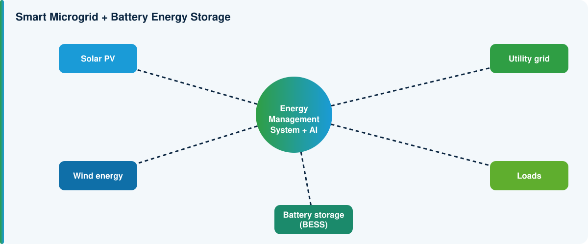

Solar Farms
AI-based generation forecasting, predictive maintenance and optimisation.
AI-Enabled Intelligent Renewable Energy and Smart Microgrid Systems for Sustainable Energy Management
AI-Enabled Intelligent Renewable Energy and Smart Microgrid Systems for Sustainable Energy Management
The central research platform links solar PV, wind energy and battery storage to loads and the grid through an energy management system. An AI layer sits above these components and continuously determines the optimal operating strategy.
The principal innovation is integrating AI, renewable energy, storage, optimisation, intelligent control, edge computing and digital twins into one unified platform.

| WP | Work package | Main deliverable |
|---|---|---|
| WP1 | Industrial Requirements & System Design | System specification |
| WP2 | Renewable Energy Modelling | PV/wind models |
| WP3 | Energy Demand Forecasting | Demand prediction models |
| WP4 | AI Renewable Forecasting | AI forecasting platform |
| WP5 | Battery Intelligence | AI-based BMS algorithms |
| WP6 | Microgrid Optimisation | Energy optimisation engine |
| WP7 | Intelligent Control | Adaptive control system |
| WP8 | Energy Digital Twin | Digital-twin platform |
| WP9 | Prototype Integration | Intelligent energy platform |
| WP10 | Validation & Demonstration | Industrial demonstration |
| WP11 | Technology Translation | Deployment/commercialisation plan |
A technology portfolio, not only academic publications.
Numerical targets will be set once the demonstration system and baseline technology are chosen.
AI-based generation forecasting, predictive maintenance and optimisation.
Energy-demand prediction and intelligent energy management.
AI-controlled energy consumption and demand response.
Hybrid renewable-energy and battery microgrids.
Solar-powered irrigation and intelligent energy management.
AI-based charging optimisation and battery-grid coordination.
Distributed renewable energy, storage and demand management.
| Risk | Challenge | Response |
|---|---|---|
| Renewable variability | Solar and wind generation are uncertain. | AI forecasting and uncertainty-aware optimisation. |
| Battery degradation | Excessive cycling can reduce battery life. | Degradation-aware energy-management algorithms. |
| AI reliability | Incorrect predictions could lead to poor control decisions. | Hybrid AI + physics-based modelling, uncertainty estimation and safety constraints. |
| Computational constraints | Complex AI models may be difficult to deploy at the edge. | Model compression, lightweight architectures and edge optimisation. |
| Industrial deployment | Real energy systems have safety and operational constraints. | Progressive validation: simulation, hardware-in-the-loop, controlled prototype, field demonstration. |